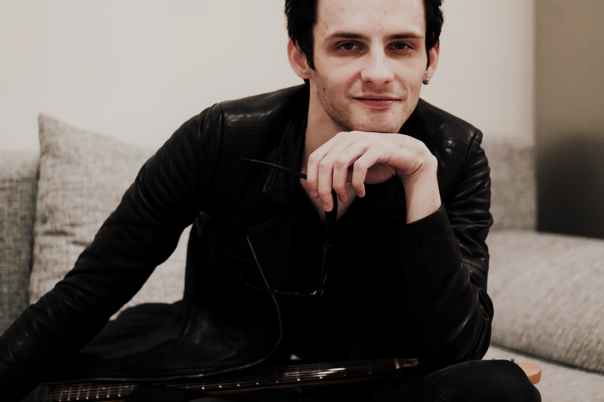

About
Matt is a film music composer, record producer, and visual director. Nominee of multiple international awards. Since 2016, he has worked as a sound engineer on sound production for documentaries, TV and radio programs, as well as orchestrations for records. While working with orchestras, and inspired by the pieces by James Horner, Hans Zimmer, and David Foster, Matt began focusing on composing original pieces for audiovisual materials. He is involved in the creative process of commercials and film projects, contributing musically and through visual direction and has received strong feedback from high-profile industry professionals.
Approach
I understand the timeline and process of film production, and I’m dedicated to paying close attention to each project in this regard. Tiny nuances of a composition can create an entirely different atmosphere. I’m more interested in writing music as something that lives within a film, rather than simply following an emotion or rhythm. Through communication with a director, it’s possible to make music another character in the story, with an unforgettable atmosphere that also becomes part of the film’s identity. My compositions are melodic, with a focus on emotional complexity, nuances, aesthetics, and the director’s ideas. When it comes to commercials, my background in branding allows me to think beyond the music itself, considering its relationship with visual identity, narrative, audience, and emotion. In principle, I never use AI, and when it comes to electronic elements, I prefer real human sound. I look for the musical idea that makes a film feel as though it could not have been made with any other music.Work
I work closely with directors, producers, and members of production teams to understand the intention behind a project before developing the music, believing that reaching a clear understanding at this stage is where the best work begins. Usually, the process begins with the brief, the visual material, and the emotional intention of the project. From there comes the central musical idea, before building the composition and production around it. As the picture develops, I remain responsive to changes in the edit and creative direction while maintaining the identity of the cues. My background as a sound engineer and record producer allows me to carry a composition through the entire process, from the initial musical idea to arrangement and production, as well as guiding the studio recording and post-production, both on-site and remotely, depending on the needs of the project.Awards and Nominations
- Apollo Global Music Awards, Athens, Greece - Nominee
- MoziMotion, Hilversum, Netherlands - Award Winner
- Student World Impact Film Festival, Waldwick, United States – Semi-Final
- WideScreen Film & Music Video Festival, Toronto, Canada – Quarter-Final
Links
- Vimeo
- Filmfreeway
- IMDb

Address
MD Productions av Matt RegnbergGöteborg, Sweden